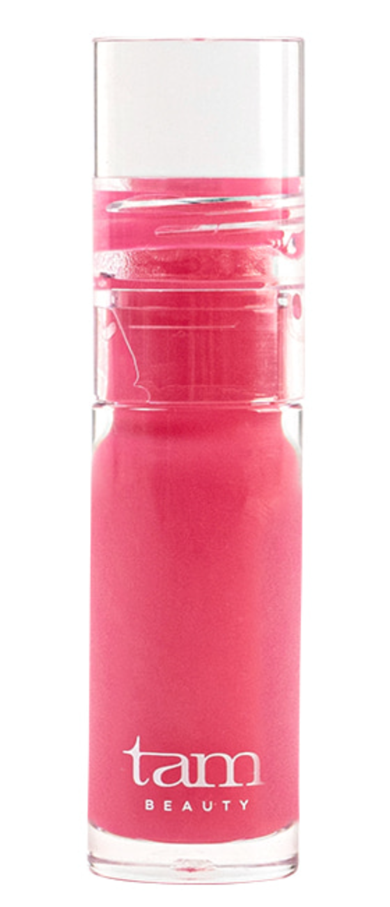
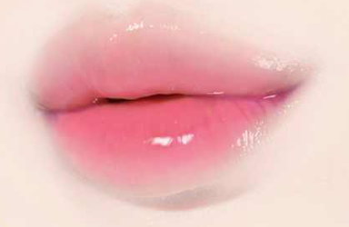
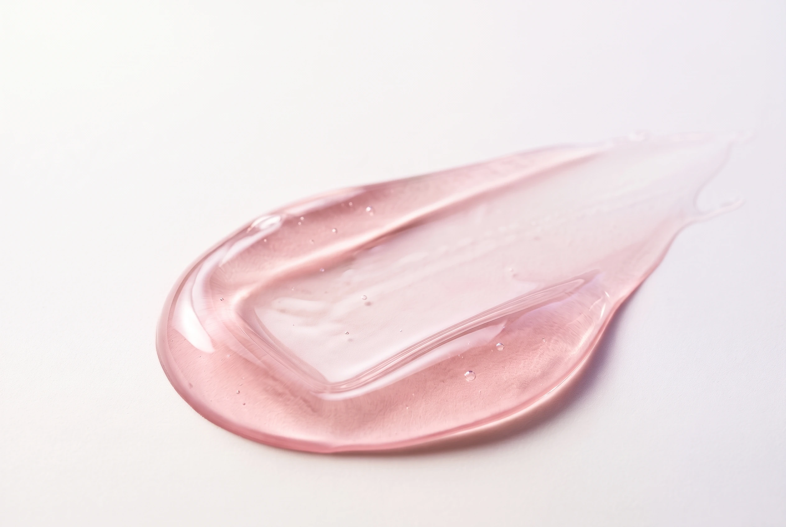

01 / FIRST LOVE
퍼스트 러브
여린 핑크

은은한 핑크빛을
더하고 싶을 때
THE JELLY
PLUMPING LIP OIL
넓은 팁으로 부드럽게 펴 바르는
촉촉한 립오일.

THE BIG TIP
도톰하고 둥근 팁으로
입술 중앙부터 가장자리까지 부드럽게.

입술 곡면을 따라
오일을 고르게 펴 발라요.
팁 끝으로 입술선을 따라
마무리해 주세요.
용기 입구에서 팁에 묻은 양을 덜어낸 뒤, 소량부터 발라 주세요.

SHEER COLOR, OIL GLOW
은은하게 비치는 컬러와 촉촉한 오일광.
입술에 닿는 시원한 쿨링감까지.
해바라기씨오일 · 녹차씨오일 함유
세 가지 컬러 모두에 함유되어 있어요.
도톰해 보이는 표현은 메이크업 연출 효과입니다. 쿨링감에는 개인차가 있습니다.
FIND YOUR COLOR
같은 오일광, 서로 다른 컬러.
원하는 립 무드로 골라 보세요.

여린 핑크

은은한 핑크빛을
더하고 싶을 때

생기 있는 로즈

로즈빛 생기를
더하고 싶을 때

맑게 감도는 퍼플

맑은 퍼플빛을
더하고 싶을 때
본래 입술색, 도포량, 조명 및 화면 설정에 따라 실제 발색이 달라질 수 있습니다.
OVER YOUR LIP COLOR
립 컬러를 바른 뒤
오일을 소량 덧발라
촉촉한 광으로 마무리해요.
입술선을 정돈한 뒤,
립오일을 펴 발라 주세요.
맨입술에 얇게 펴 발라
은은한 컬러와 윤기를 더해요.

폴리부텐, 옥틸도데칸올, 해바라기씨오일, 녹차씨오일, 브이피/헥사데센코폴리머, 덱스트린팔미테이트, 카프릴릭/카프릭트라이글리세라이드, 실리카실릴레이트, 마이카, 멘틸락테이트, 토코페릴아세테이트, 에틸멘탄카복사마이드, 메틸다이아이소프로필프로피온아마이드, 펜타에리스리틸테트라-다이-t-부틸하이드록시하이드로신나메이트, 티타늄디옥사이드 (CI 77891), 적색104호의(1) (CI 45410), 적색201호 (CI 15850), 로즈마리잎추출물, 1,2-헥산다이올
폴리부텐, 옥틸도데칸올, 해바라기씨오일, 녹차씨오일, 브이피/헥사데센코폴리머, 덱스트린팔미테이트, 카프릴릭/카프릭트라이글리세라이드, 실리카실릴레이트, 마이카, 멘틸락테이트, 토코페릴아세테이트, 에틸멘탄카복사마이드, 메틸다이아이소프로필프로피온아마이드, 펜타에리스리틸테트라-다이-t-부틸하이드록시하이드로신나메이트, 티타늄디옥사이드 (CI 77891), 적색산화철 (CI 77491), 황색 5호 (CI 15985), 적색202호 (CI 15850:1), 흑색산화철 (CI 77499), 로즈마리잎추출물, 1,2-헥산다이올
폴리부텐, 옥틸도데칸올, 해바라기씨오일, 녹차씨오일, 브이피/헥사데센코폴리머, 덱스트린팔미테이트, 카프릴릭/카프릭트라이글리세라이드, 실리카실릴레이트, 마이카, 멘틸락테이트, 토코페릴아세테이트, 에틸멘탄카복사마이드, 메틸다이아이소프로필프로피온아마이드, 적색202호 (CI 15850:1), 펜타에리스리틸테트라-다이-t-부틸하이드록시하이드로신나메이트, 티타늄디옥사이드 (CI 77891), 청색 1호 (CI 42090), 로즈마리잎추출물, 1,2-헥산다이올